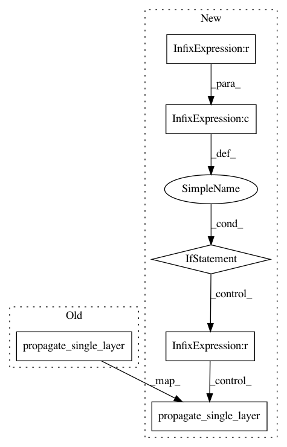

fa0e8dd1ce412985c61d3a65014e15239096cd48,coremltools/converters/nnssa/coreml/ssa_converter.py,SSAConverter,_convert_resize_nearest_neighbor,#SSAConverter#Any#,2122
Before Change
mode="NN")
output_shape = self._get_tensor_shape_from_type(node.datatype)
shapes.propagate_single_layer(layer, self.tensor_shapes,
output_shapes=[output_shape])
def _convert_layer_normalization(self, node):
assert len(node.inputs) == 1
input_nodes, input_names, input_types = self._get_input_tensors(node)
After Change
raise ValueError("[SSAConverter] ResizeNearestNeighbor has invalid"
"input shape {}".format(input_shape))
if target_size[0] < input_shape[2] and target_size[1] < input_shape[3]:
self._convert_resize_bilinear(node)
elif target_size[0] > input_shape[2] and target_size[1] > input_shape[3]:
if (target_size[0] % input_shape[2] > 0 or
target_size[1] % input_shape[3] > 0):
raise ValueError("[SSAConverter] Unsupported fractional"
"nearest-neighbor upsampling")
scaling_factor_h = int(target_size[0] / input_shape[2])
scaling_factor_w = int(target_size[1] / input_shape[3])
if scaling_factor_h <= 0 or scaling_factor_w <= 0:
raise ValueError("[SSAConverter] Invalid scaling factor.")
if node.attr.get("align_corners", False) is True:
raise ValueError("[SSAConverter] CoreML does not support "
"ResizeNearestNeighbor with align_core.")
builder = self._get_builder()
layer = builder.add_upsample(
name=node.name,
scaling_factor_h=scaling_factor_h,
scaling_factor_w=scaling_factor_w,
input_name=input_names[0],
output_name=node.name,
mode="NN")
output_shape = self._get_tensor_shape_from_type(node.datatype)
shapes.propagate_single_layer(layer, self.tensor_shapes,
output_shapes=[output_shape])
else:
raise NotImplementedError("[SSAConverter] Unsupported resizing option.")
def _convert_layer_normalization(self, node):
assert len(node.inputs) == 1
input_nodes, input_names, input_types = self._get_input_tensors(node)
input_name = input_names[0]
In pattern: SUPERPATTERN
Frequency: 3
Non-data size: 6
Instances
Project Name: apple/coremltools
Commit Name: fa0e8dd1ce412985c61d3a65014e15239096cd48
Time: 2019-10-22
Author: shuoxin_lin@apple.com
File Name: coremltools/converters/nnssa/coreml/ssa_converter.py
Class Name: SSAConverter
Method Name: _convert_resize_nearest_neighbor
Project Name: apple/coremltools
Commit Name: d1e6e624ef891543c5bba32bb0a696d350714693
Time: 2019-08-20
Author: smq@apple.com
File Name: coremltools/converters/nnssa/coreml/ssa_converter.py
Class Name: SSAConverter
Method Name: _convert_reshape
Project Name: apple/coremltools
Commit Name: 2b7f4471e764dd4b1a924837b6f515ad7e8a294a
Time: 2019-10-03
Author: gdawer@apple.com
File Name: coremltools/converters/nnssa/coreml/ssa_converter.py
Class Name: SSAConverter
Method Name: _convert_set_global